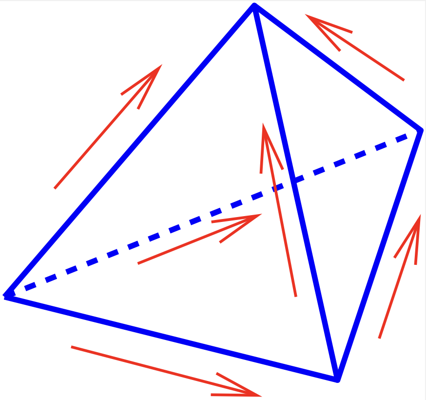

36. The function space H(curl)#
The proper space \(V\) is the \(H(\operatorname{curl})\):
Again, the differential operator \(\operatorname{curl}\) is understood in the weak sense. The canonical norm is
Similar to \(H^1\) and \(H(\operatorname{div})\), there exists a trace operator for \(H(\operatorname{curl})\). Now, only the tangential components of the boundary values are well defined:
Trace theorem: There exists a continuous tangential trace operator \(\operatorname{tr}_\tau v : H(\operatorname{curl}) \rightarrow W(\partial \Omega)\) such that
\[ \operatorname{tr}_\tau v = (v|_{\partial \Omega})_\tau \]for smooth functions \(v \in [C(\overline \Omega)]^3\).
Domain decomposition: Let \(\Omega = \cup \Omega_i\). Assume that \(u|_{\Omega_i} \in H(\operatorname{curl},\Omega_i)\), and the tangential traces are continuous across the interfaces \(\gamma_{ij}\). Then \(u \in H(\operatorname{curl}, \Omega)\).
The theorems are according to the ones we have proven for \(H(\operatorname{div})\). But, the proofs (in \(\mathbb{R}^3\)) are more involved.
The gradient operator \(\nabla\) relates the space \(H^1\) and \(H(\operatorname{curl})\):
Furthermore, the kernel space
is exactly the range of the gradient:
The mixed system: Find \(A \in V = H(\operatorname{curl})\) and \(\varphi \in Q = H^1 / \mathbb{R}\) such that
\[\begin{equation*} \begin{array}{ccccll} \int \mu^{-1} \operatorname{curl} A \, \cdot \operatorname{curl} v \, dx & + & \int \nabla \varphi \cdot v \, dx & = & \int j \cdot v \, dx \qquad & \forall \, v \in V \\[0.5em] \int A \cdot \nabla \psi \, dx & & & = & 0 & \forall \, \psi \in Q \end{array} \end{equation*}\]has a unique solution which depends continuously on the right hand side.
Proof: The bilinear-forms
and
are continuous w.r.t. the norms of \(V = H(\operatorname{curl})\) and \(Q = H^1/\mathbb{R}\).
The LBB-condition in this case is trivial. Choose \(v = \nabla \varphi\):
The difficult part is the kernel coercivity of \(a(.,.)\). The norm involves also the \(L_2\)-norm, while the bilinear-form only involves the semi-norm \(\| \operatorname{curl} \, v \|_{L_2}\). Coercivity cannot hold on the whole \(V\): Take a gradient function \(\nabla \psi\). On the kernel of the \(b(.,.)\)-form, the \(L_2\)-norm is bounded by the semi-norm:
where
This is a Friedrichs-like inequality.
36.1. Finite elements in \(H(\operatorname{curl})\)#
We construct finite elements in three dimensions. The trace theorem implies that functions in \(H(\operatorname{curl})\) have continuous tangential components across element boundaries (=faces).
We design tetrahedral finite elements. The pragmatic approach is to choose the element space as \(V_T = P^1\), and choose the degrees of freedom as the tangential component along the edges in the end-points of the edges. The dimension of the space is \(3 \times \mbox{dim} \{ P^1 \} = 3 \times 4 = 12\), the degrees of freedom are 2 per edge, i.e., \(2 \times 6 = 12\). They are also linearly independent. In each face, the tangential component has 2 components, and is linear. Thus, the tangential component has dimension 6. These 6 values are defined by the 6 degrees of freedom of the 3 edges in the face. Neighboring elements share this 6 degrees of freedom in the face, and thus have the same tangential component.
There is a cheaper element, called lowest order Nédélec element, or edge-element. It has the same accuracy for the \(\operatorname{curl}\)-part (the \(B\)-field) as the \(P^1\)-element. It is similar to the Raviart-Thomas element. It contains all constants, and some linear polynomials. The three Cartesian components are defined in common. The element space is
These are 6 coefficients. For each of the 6 edges of a tetrahedron, one chooses the integral of the tangential component along the edge
{kind=link}

Lemma: The basis function \(\varphi_{E_i}\) associated with the edge \(E_i\) is
\[ \varphi_{E_i} = \lambda_{E_i^1} \nabla \lambda_{E_i^2} - \nabla \lambda_{E_i^2} \lambda_{E_i^1}, \]where \(E_i^1\) and \(E_i^2\) are the two vertex numbers of the edge, and \(\lambda_1, \ldots \lambda_4\) are the vertex shape functions.
Proof:
These functions are in \(V_T\)
If \(i \neq j\), then \(\psi_{E_j}(\varphi_{E_i}) = 0\).
\(\psi_{E_i}(\varphi_{E_i}) = 1\)
Thus, edge elements belong to \(H(\operatorname{curl})\). Next, we will see that they have also very interesting properties.